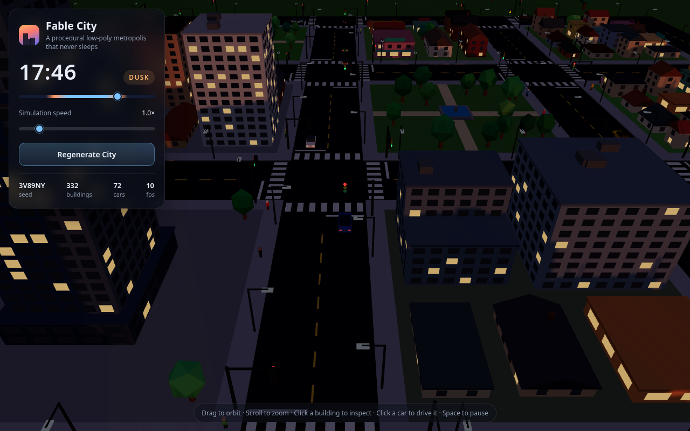
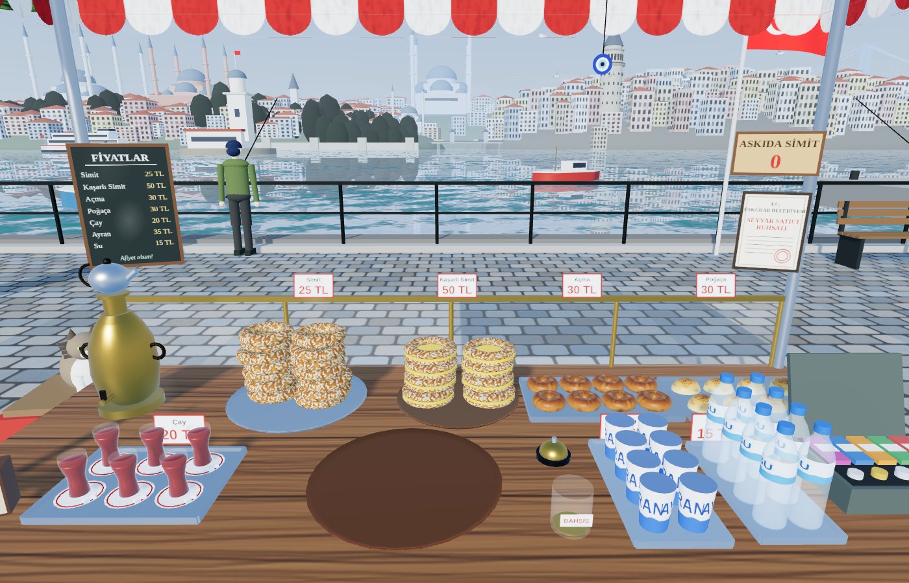
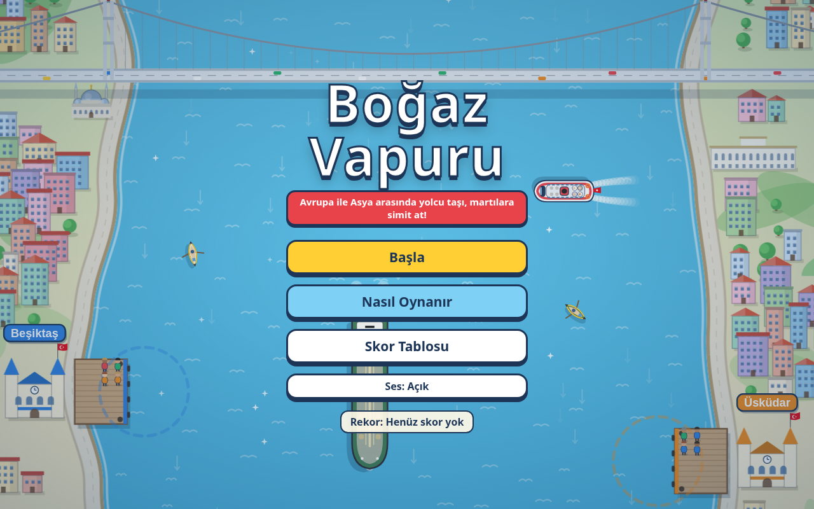
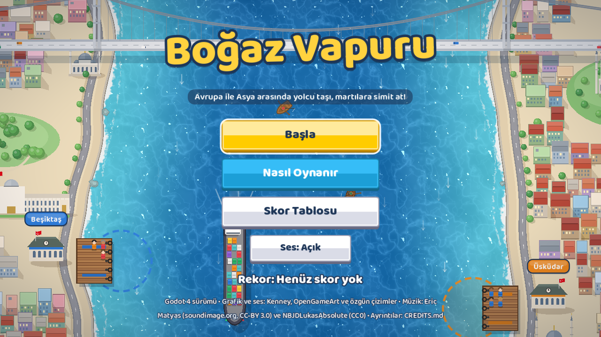
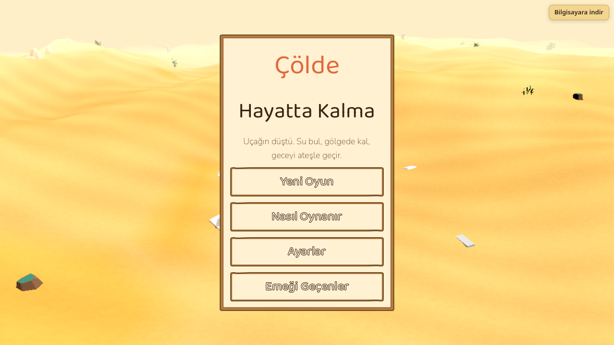
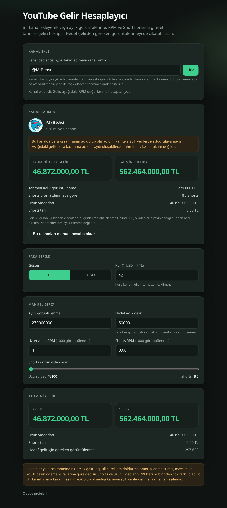

Claude
Claude Code ve Claude Fable 5.2 ile üretilen tarayıcı projeleri. Kaynak kod GitHub üzerinde.

Devam ediyor
Boğaz'ın Simitçisi
Claude Fable 5.2
Tezgâhın arkasından Üsküdar sahiline bakan birinci şahıs simitçilik oyunu. 3B sahne hazır; oyun döngüsü henüz yazılmadı.


Tamamlandı
Boğaz Vapuru (Godot 4)
Godot 4.7 · Web export
Boğaz Vapuru'nun Godot 4'e taşınmış, grafikleri yenilenmiş sürümü: su shader'ı, dalga izleri, parallax silüet, müzik ve sesler. Oynanış aynı; klavye ve dokunmatik joystick ile oynanır. Varlıklar CC0/CC-BY, liste CREDITS.md'de.

Tamamlandı
Çölde Hayatta Kalma
Godot 4.7 · Web export
Uçağın çölde düştü: su bul, gölgede kal, geceyi ateşin başında geçir. stilize-gerçekçi 3D prosedürel çöl (PBR dokular), gün/gece döngüsü, kum fırtınaları, craft ve av; telsizi onar ya da kervansaraya yürü. Otomatik kayıt ve grafik kalitesi ayarı var; klavye ve dokunmatikle oynanır. Varlıklar CC0, liste CREDITS.md'de.

Tamamlandı
YouTube Gelir Hesaplayıcı
Tek sayfa · HTML
Aylık görüntülenme, RPM ve Shorts oranına göre tahmini geliri hesaplar. Bir kanal da eklenebilir; para kazanma doğrulanamazsa bu açık yazılır, gelir yine de “açık olsaydı” tahmini olarak gösterilir. Hedef gelirden gereken görüntülenme, TL/USD.